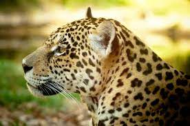

#1 - Onça-pintada
A onça-pintada ou jaguar (nome científico: Panthera onca), também conhecida como onça-preta (no caso dos indivíduos melânicos), é uma espécie de mamífero carnívoro da família dos felídeos (Felidae) encontrada nas Américas. É o terceiro maior felino do mundo, após o tigre e o leão, e o maior do continente americano. Apesar da semelhança com o leopardo (Panthera pardus), a onça-pintada é evolutivamente mais próxima do leão (Panthera leo). Ocorre desde o sul dos Estados Unidos até o norte da Argentina, mas está extinta em diversas partes dessa região atualmente. Nos Estados Unidos, por exemplo, está extinta desde o início do século XX, mas possivelmente ainda ocorre no Arizona. É encontrada principalmente em ambientes de florestas tropicais, e geralmente não ocorre acima dos 1 200 m de altitude. A onça-pintada está fortemente associada à presença de água e é notável como um felino que gosta de nadar.
É um felino de porte grande, com peso variando de 56 a 92 quilos, podendo chegar a 158 quilos, e comprimento variando de 1,12 a 1,85 m sem a cauda, que é relativamente curta. Fisicamente semelhante ao leopardo, dele se diferencia pelo padrão de manchas na pele e pelo maior tamanho. Existem indivíduos totalmente pretos. As onças pintadas possuem mandíbulas excepcionalmente fortes, apresentando as mais poderosas mordidas dentre todos os grandes felinos. Isso permite que ela fure a casca dura de répteis como a tartaruga e de utilizar um método de matar incomum: ela morde diretamente através do crânio da presa entre os ouvidos, uma mordida fatal no cérebro.
É um animal crepuscular e solitário. Caça através de emboscadas, sendo um importante predador no topo da cadeia alimentar e pode comer qualquer animal que seja capaz de capturar, desempenhando um papel na estabilização dos ecossistemas e na regulação das populações de espécies de presas. Porém, tem preferência por grandes herbívoros, podendo atacar o gado doméstico. Frequentemente convive com a onça-parda (Puma concolor), influenciando os hábitos e comportamento deste outro felino. A área de vida pode ter mais de 100 quilômetros quadrados, com os machos tendo territórios englobando o de duas ou três fêmeas. A onça-pintada é capaz de rugir e usa esse tipo de vocalização em contextos de territorialidade. Alcança a maturidade sexual com cerca de 2 anos de idade, e as fêmeas dão à luz geralmente a dois filhotes por vez, pesando entre 700 e 900 gramas. Em cativeiro, a onça-pintada pode viver até 23 anos, mais do que em estado selvagem.
A IUCN considera a espécie como "quase ameaçada", por sua ampla distribuição geográfica, mas suas populações estão em declínio, principalmente por causa da perda e da fragmentação do seu habitat. Entretanto, localmente ela pode estar em sério risco de extinção, como em áreas da América Central e do Norte e na Mata Atlântica brasileira. O comércio internacional de onças ou de suas partes é proibido, mas o felino ainda é frequentemente caçado por fazendeiros e agricultores na América do Sul. Apesar de seu número reduzido, a sua distribuição geográfica ainda é ampla e há boas chances de sobrevivência da espécie a longo prazo na Amazônia e no Pantanal. A onça-pintada faz parte da mitologia de diversas culturas indígenas americanas, incluindo as dos maias, astecas e guaranis e a sua caça ainda é uma atividade carregada de simbolismo, principalmente entre os pantaneiros.